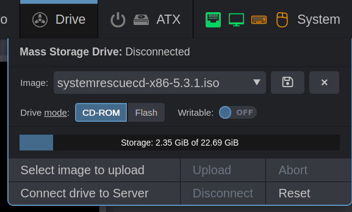
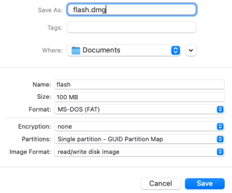

Mass Storage Drive¶
This powerful feature that is available on all PiKVM V2+ devices. It allows PiKVM to emulate a virtual CD-ROM or Flash Drive for the target host which will be available even in BIOS/UEFI when you need live disk to revive the OS or even reinstall it.
Legacy note
This document is relevant for KVMD >= 3.249. If you are using an older version, please update the PiKVM OS.
Take a look at the Drive menu in the Web UI |
|---|
|  |
The following actions are available here:
- Uploading an image to the internal storage of PiKVM.
- Selecting an image to connect to the target host.
- Changing the media type and write availability mode.
- Downloading an image from the PiKVM storage.
- Drive connection management and much more.
Warning
Never turn off the power of the PiKVM while the image is being uploaded or while the image is connected to the target host in write mode. This may cause file corruption.
The rest of the time, power off is safe because the PiKVM filesystem will be in read-only mode.
The max CD-ROM image size is 2.2 GB
This is a Linux kernel limitation on PiKVM, which currently cannot emulate a DVD drive. To use a larger boot image, please use a Flash Drive emulation. If this is not possible (the image does not support Flash, for example, for Windows), you can try this recipe.
Changing the media type between CD-ROM and Flash is possible only when the device is reconnected
On PiKVM V3 and V4, this can be done using the System -> Connect main USB switch in the Web UI.
In this case, the media type is determined at the time of connecting the image, and not by clicking on the switch. The switch affects the settings of the future connection. For non-V3/V4 devices, you need to either reboot your target host or otherwise reinitialize the drive.
Manual images uploading¶
PiKVM stores images in a special memory card partition mounted in /var/lib/kvmd/msd.
Most of the time, the partition is read-only, and is remounted for writing automatically if the appropriate drive emulation mode is enabled, or to upload a new image. This protects the data from damage in the event of a sudden loss of power.
Step by step: Manual image uploading using SCP or rsync
-
Remount internal storage to read-write mode manually:
[root@pikvm ~]# kvmd-helper-otgmsd-remount rw -
Upload the image(s) to
/var/lib/kvmd/msdusingscpor some other tool. -
Remount internal storage back to safe read-only mode:
[root@pikvm ~]# kvmd-helper-otgmsd-remount ro
Tip
An HTTP API for Mass Storage management is also available for advanced use.
Writable Flash Drive¶
When emulating Flash Drive on PiKVM, you can allow the target host to write files to the image. After stopping the drive, this image can be downloaded and opened on the local host. This is useful if you need to get some files from the target host.
The file system image for the virtual Flash Drive must be prepared in advance. This can be done either on the local host or in the PiKVM console.
Here some options:
Step by step: Creating simple FAT32 image on PiKVM
-
Remount internal storage to read-write mode manually:
[root@pikvm ~]# kvmd-helper-otgmsd-remount rw -
Create an empty image file in
/var/lib/kvmd/msd(this is the internal storage of PiKVM images) of desired size (512MB in this example) and format it to FAT32:[root@pikvm ~]# dd if=/dev/zero of=/var/lib/kvmd/msd/flash.img bs=1M count=512 status=progress [root@pikvm ~]# loop=$(losetup -f) [root@pikvm ~]# echo -e 'o\nn\np\n1\n\n\nt\nc\nw\n' | fdisk /var/lib/kvmd/msd/flash.img [root@pikvm ~]# losetup -P $loop /var/lib/kvmd/msd/flash.img [root@pikvm ~]# mkfs.vfat ${loop}p1 [root@pikvm ~]# losetup -d $loop [root@pikvm ~]# chmod 666 /var/lib/kvmd/msd/flash.img -
Remount internal storage back to safe read-only mode:
[root@pikvm ~]# kvmd-helper-otgmsd-remount ro
Note
- For PiKVM V3+ you'll need to toggle the USB connection using the Web UI: Switch
System -> Connect Main USBto off, then on. - For V2 you'l need to reboot the target host.
Step by step: Creating an image on a local macOS
-
Open
Disk Utility. -
Click menu
File -> New Image -> Blank Image. -
Set some options:
FormatandPartitionsare very important -
Click
Save. The drive will automatically be mounted. -
Copy files (such as BIOS updates) onto the new image (via terminal or drag and drop in Finder).
-
Eject image.
-
Rename the image file from
.dmgto.img. -
Upload the image to PiKVM.
The image flash.img now should be available in the Drive menu in Web UI.
Change drive mode to the Flash position and enable Writable switch.
Connect the image, do whatever is necessary, with files, and disconnect it.
The modified image containing your files can be downloaded to a local host
by selecting it from the menu and clicking the floppy disk icon.
NFS storage¶
It is possible to create a shared image storage for an entire fleet of PiKVMs using NFS.
If you have some shares, you can easily connect them to PiKVM by creating mount points and adding relevant records to /etc/fstab.
At the same time, you will be able to upload images via PiKVM Web UI to NFS, and still use local storage.
Step by step: Connecting NFS storage
-
Make some preparations:
[root@pikvm ~]# rw [root@pikvm ~]# pacman -Syu [root@pikvm ~]# pacman -S nfs-utils [root@pikvm ~]# kvmd-helper-otgmsd-remount rw [root@pikvm ~]# mkdir -p /var/lib/kvmd/msd/NFS_Primary [root@pikvm ~]# mkdir -p /var/lib/kvmd/msd/NFS_Secondary [root@pikvm ~]# kvmd-helper-otgmsd-remount ro -
Add NFS shares to
/etc/fstab:server:/srv/nfs/NFS_Primary /var/lib/kvmd/msd/NFS_Primary nfs vers=3,timeo=1,retrans=1,soft,nolock 0 0 server:/srv/nfs/NFS_Secondary /var/lib/kvmd/msd/NFS_Secondary nfs vers=3,timeo=1,retrans=1,soft,nolock 0 0 -
Perform
rebootto apply all changes.
Make sure that the kvmd user has the read access from these directories. You can also give the write access if needed.
For the best performance, it is required to ensure reliable connectivity with NFS server and use minimum timeo and retrans values.
Using the soft option is mandatory, nolock is recommended.
Note if an image is added to the NFS storage from the outside, PiKVM will not be able to track this event, so it is required to use
Drive -> Reset in the Web UI to update the list of images.
Configuring an NFS server is beyond the scope of this guide.
Multiple drives¶
By default, PiKVM creates one virtual drive for Mass Storage emulation. However, if necessary, you can create additional ones and manage them using console utility. This is useful if there is a need to boot the target host from the first drive, and then connect the second to exchange files.
Note
The first virtual drive is available for management both in the Web UI (the Drive menu)
and using the console utility. Extra drives are controlled only from console.
The issue of additional drives concerns compatibility. There is an assumption that multiple drives on the same USB may confuse some BIOS/UEFI. So for paranoid reasons, this feature requires manual activation. It is recommended setting up the drives in advance, making sure that booting from ISO CD or Flash is still working with your specific target host, and then using the drives as planned.
Also additional drives consumes extra endpoints, read more under the spoiler:
USB limitations
TL;DR: By default, you can add only one additional device to choose from, such as USB Ethernet, or USB Serial, or an extra Mass Storage Drive.
There is a hardware limit on the number of devices that can be emulated at the same time. Each USB device uses so-called endpoints to communicate with the host. Depending on the type, the device consumes a different number of endpoints, while their total number is limited by the capabilities of the chip, for Raspberry Pi it is 8.
It is quite difficult to calculate the number of endpoints used, but in the case of PiKVM, you can focus on the following numbers:
| Device | Endpoints |
|---|---|
| Keyboard, mouse | 1 for each |
| Mass Storage Drive | 2 for each |
| USB Ethernet, USB Serial | 3 for each |
V2 and V3 emulates one mouse by default, V4 emulates two mouses. Thus, V2 and V3 use 4 endpoints, and V4 uses 5 by default.
Creating an axtra Mass Storage Drive consumes additional endpoints, as well as USB Serial and USB Ethernet, so only a limited number of devices can be selected for the final configuration, for example, one USB Ethernet.
If you need something more non-standard, you can disable the regular Mass Storage Drive and the additional mouse (on V4) to free up some extra endpoints.
The kvmd-otg service is responsible for setting up USB emulation. If the endpoint limit is exceeded,
the service will not be able to start and no emulated USB device will work.
In the log it looks something like this:
# journalctl -u kvmd-otg
...
kvmd-otg[382]: kvmd.apps.otg INFO --- ===== Preparing complete =====
kvmd-otg[382]: kvmd.apps.otg INFO --- Enabling the gadget ...
kvmd-otg[382]: kvmd.apps.otg INFO --- WRITE --- /sys/kernel/config/usb_gadget/kvmd/UDC
kvmd-otg[382]: OSError: [Errno 524] Unknown error 524
kvmd-otg[382]: During handling of the above exception, another exception occurred:
kvmd-otg[382]: Traceback (most recent call last):
kvmd-otg[382]: File "/usr/bin/kvmd-otg", line 9, in <module>
kvmd-otg[382]: main()
kvmd-otg[382]: File "/usr/lib/python3.10/site-packages/kvmd/apps/otg/__init__.py", line 348, in main
kvmd-otg[382]: options.cmd(config)
kvmd-otg[382]: File "/usr/lib/python3.10/site-packages/kvmd/apps/otg/__init__.py", line 278, in _cmd_start
kvmd-otg[382]: _write(join(gadget_path, "UDC"), udc)
kvmd-otg[382]: File "/usr/lib/python3.10/site-packages/kvmd/apps/otg/__init__.py", line 83, in _write
kvmd-otg[382]: with open(path, "w") as file:
kvmd-otg[382]: OSError: [Errno 524] Unknown error 524
systemd[1]: kvmd-otg.service: Main process exited, code=exited, status=1/FAILURE
systemd[1]: kvmd-otg.service: Failed with result 'exit-code'.
systemd[1]: Failed to start PiKVM - OTG setup.
In this case, you need to disable some of the previously enabled devices and restart PiKVM.
So, to add a second virtual drive, follow this:
Step by step: Enabling an additional drive
-
Switch the filesystem to read-write mode:
[root@pikvm ~]# rw -
Edit
/etc/kvmd/override.yamland add the extra drive config section:otg: devices: drives: enabled: true # Set it to true to enable count: 1 # +1 drive, default value default: # Default configuration for the all extra drives cdrom: false # Default value (false for the generic flash drive) rw: false # Read-only by defaultThe
countparameter determines the number of additional drives (remember the limit on endpoints). Each of the drives will be created with the same initial parameters described in thedefaultsection. -
Perform reboot:
[root@pikvm ~]# reboot
Manual drives management¶
The kvmd-otgmsd console utility is used to manage additional (and the first main one) drives.
The full list of options can be found by running kvmd-otgmsd --help.
Step by step: Creating the flash drive image to get some files from the target host
-
Switch the filesystem to read-write mode:
[root@pikvm ~]# rw -
Create an empty image file with desired size (1GB in this example):
[root@pikvm ~]# dd if=/dev/zero of=/root/flash.img bs=1M count=1000 status=progress -
Connect it to the drive
1(the creation process is described in the previous section):[root@pikvm ~]# kvmd-otgmsd -i 1 --set-rw=1 --set-cdrom=0 --set-image=/root/flash.imgNote
Index
0represents the main drive that is controlled via the Web UI and API. -
On this step, you will be able to access the flash drive from the target host and format the it in the usual way.
-
View the drive state:
[root@pikvm ~]# kvmd-otgmsd -i 1 Image file: /root/flash.img CD-ROM flag: no RW flag: yes -
To disable the flash drive and view the files on it from the PiKVM, run:
[root@pikvm ~]# kvmd-otgmsd -i 1 --unlock --eject -
Don't forget to remount the root filesystem to read-only mode:
[root@pikvm ~]# ro -
You can download the resulting image via SCP or mount it as a loop device on the PiKVM:
[root@pikvm ~]# mount -o loop /root/flash.img /mnt [root@pikvm ~]# ls /mnt [root@pikvm ~]# umount /mnt
Tip
The main drive can also be switched to read-write mode, this can be done from the Web UI.
In this case, the image will have to be prepared outside of PiKVM, and upload it to use, then download it back to your local host for files extraction.
Disabling Mass Storage¶
In rare cases, it may be necessary to disable Mass Storage emulation if the BIOS/UEFI does not recognize it correctly and even refuses to work with USB keyboard and mouse.
Step by step: Permanent disabling Mass Storage
-
Switch the filesystem to read-write mode:
[root@pikvm ~]# rw -
Edit
/etc/kvmd/override.yamland add the extra drive config section:kvmd: msd: type: disabled -
Perform reboot:
[root@pikvm ~]# reboot
Tip
As an alternative method may be to use the dynamic USB configuration, which allows you to temporarily disable any of the emulated devices, including Mass Storage Drive.
Making Windows Boot Flash Image¶
An alternative version of this can be found below that does not require a physical usb flash
This procedure will create a disk image of a USB stick. This is mostly required for Windows based images since they are larger than the CDROM based limit of 2.2GB. You can create a bootable USB stick with the normal Microsoft tools, e.g. Media Creation Tool. Creating a bootable USB stick can also be made from an ISO file with other tools like Rufus.
Without resizing, the full size of the USB stick will be used, so keep the stick as small as possible (e.g. 4GB or 8GB) but still large enough for all Windows files. The Media Creation tool will tell you what the minimum size is.
Before creating the image file, you can use a tool like EaseUS Partition Master Free or GParted to resize the main FAT32 partition on the USB stick. This will save space on PiKVM.
You can also perform these steps on a separate UNIX machine and transfer the image over to PiKVM.
Or, on Windows you could use a program like PassMark ImageUSB (only for full USB size images)
or dd for Windows to create the image.
Once you have the desired USB stick perform the following on the RPi to create the image directly to the PiKVM image storage folder.
-
Insert Windows based USB stick into Pi4, generated with Microsoft USB creation tool. SSH to PiKVM as root.
# dmesg [ 3025.025401] usb-storage 2-1:1.0: USB Mass Storage device detected [ 3025.038911] scsi host0: usb-storage 2-1:1.0 [ 3026.132248] scsi 0:0:0:0: Direct-Access Kingston DataTraveler 3.0 PMAP PQ: 0 ANSI: 6 [ 3026.771425] sd 0:0:0:0: [sda] 15360000 512-byte logical blocks: (7.86 GB/7.32 GiB) [ 3026.790276] sd 0:0:0:0: [sda] Write Protect is off [ 3026.802530] sd 0:0:0:0: [sda] Mode Sense: 23 00 00 00 [ 3026.804450] sd 0:0:0:0: [sda] No Caching mode page found [ 3026.814082] sd 0:0:0:0: [sda] Assuming drive cache: write through [ 3026.908712] sda: sda1 [ 3026.922794] sd 0:0:0:0: [sda] Attached SCSI removable disk [root@pikvm ~]#USB devices shows as
sda. We will usesda1as the Windows partition. -
mount msd folder as read/write
# kvmd-helper-otgmsd-remount rw -
Create image of USB data PARTITION to an image file, this will take some time, in this case about 12 minutes (RPi4).
# dd if=/dev/sda1 of=/var/lib/kvmd/msd/windows10-2004.bin bs=8M status=progress 4458545152 bytes (4.5 GB, 4.2 GiB) copied, 736 s, 6.1 MB/s 531+1 records in 531+1 records out 4458545152 bytes (4.5 GB, 4.2 GiB) copied, 736.213 s, 6.1 MB/s -
Correct ownership of new image and make sure the website reports the file as complete.
# chown kvmd:kvmd /var/lib/kvmd/msd/windows10-2004.bin -
Remount msd folder as read only
# kvmd-helper-otgmsd-remount ro -
On PiKVM webpage, under Storage select the new image and connect it in Drive Mode: Flash to the server.
Boot the server and select boot device like you normally would. E.g. in a AMI BIOS the boot device is called "Linux File-CD Gadget 0504".
An alternative to making a Windows boot image that does not require a physical usb flash drive¶
- Physical USB is not needed but external system is mandatory.
- Create Ventoy image (on Ubuntu x86 machine) (Unaware of a windows version).
- There is an assumption that you know basic linux to understand that not all dev devices are named exactly like the below
# dd if=/dev/zero of=ventoy.img bs=1M count=4700 status=progress
- This makes a ventoy.img file, I would name this what it is EG:
ventoy_win10.img -
At the same time, download Media Creation Tool and select iso
-
On the Ubuntu machine
- At the time of this, it was 1.0.51, change to latest version
# wget https://github.com/ventoy/Ventoy/releases/download/v1.0.51/ventoy-1.0.51-linux.tar.gz
# tar zxvf ventoy-1.0.51-linux.tar.gz
# sudo losetup -f ventoy.img
# sudo losetup -l | grep ventoy (To locate which loop device was used)
# sudo sh ~/ventoy-1.0.51/Ventoy2Disk.sh -i /dev/loopXX (This will make a loopXXp1 and a loopXXp2 and will format both partitions
# cd /media/XXX (Usually your login)
# mkdir ventoy
# sudo mount /dev/loopXXp1 /media/XXX/ventoy
- Either cp/scp over the .iso you downloaded from the Media tool or use a NFS mount
sudo cp windows.iso /media/XXX/ventoy
sudo umount /dev/loopXX
# This is going to be different for everyone, please choose the same one you mounted earlier
sudo losetup -d /dev/loopXX
# This may or may not work for everyone, if it doesnt work, skip and move forward#
ssh into the Ubuntu system (Or whatever OS you are using)
- On PiKVM
# cd /var/lib/kvmd/msd
# mount -o remount,rw .
- On Ubuntu
# scp ventoy.img root@pikvm:/var/lib/kvmd/msd
- Mount
ventoy.imgas normal flash and select the PiKVM boot device, it should popup with the VenToy logo with the window.iso as a selection